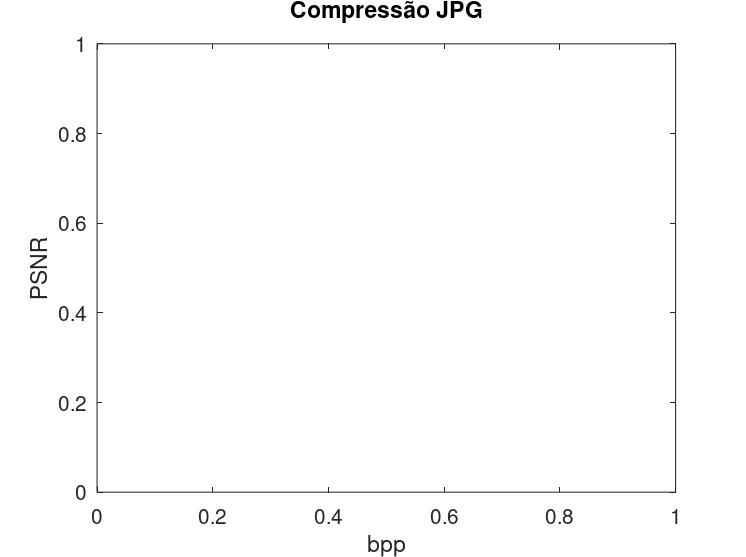

Estudante: André Alfonso Peixoto
GONZALEZ, R; WOODS, R; EDDINS, S. Digital Image Processing Using MATLAB 2. 2. ed. Gatesmark Publishing, 2009. Mathworks Stack Exchange Wikipedia
%Para uma imagem de seu projeto pessoal ou alguma qualquer outra imagem sem compressão. % * Aplique uma compressão de essa imagem (varie algum parâmetro) % - JPG % - JPG2000 % - SPIHT (algoritmo que utiliza transformada wavelet) % * plote o gráfico PSNR vs bpp % - comente %}
pkg load signal; pkg load symbolic; pkg load image;
filename_ref = "lena_gray_512.tif"; img_ref = imread(filename_ref); figure; imshow(img_ref); title("Imagem original (TIFF)");
bpp_jpg = []; my_psnr_jpg = []; bpp_jp2 = []; my_psnr_jp2 = []; bpp_spiht = []; my_psnr_spiht = [];
for param1 = 10:10:99 filename_comp = "lena_gray_512.jpg"; imwrite(img_ref,filename_comp,"Quality",param1); img_compress = imread(filename_comp); Cr = imratio(filename_ref,filename_comp); bpp_jpg = [8/Cr bpp_jpg]; my_psnr_jpg = [psnr(img_ref,img_compress) my_psnr_jpg]; end
error: 'imratio' undefined near line 7, column 7 in: for param1 = 10:10:99 filename_comp = "lena_gray_512.jpg"; imwrite(img_ref,filename_comp,"Quality",param1); img_compress = imread(filename_comp); Cr = imratio(filename_ref,filename_comp); bpp_jpg = [8/Cr bpp_jpg]; my_psnr_jpg = [psnr(img_ref,img_compress) my_psnr_jpg]; end
for param1 = 2:10:150 filename_comp = "lena_gray_512.jp2"; imwrite(img_ref,filename_comp,"CompressionRatio",param1); img_compress = imread(filename_comp); Cr = imratio(filename_ref,filename_comp); bpp_jpg = [8/Cr bpp_jp2]; my_psnr_jp2 = [psnr(img_ref,uint8(img_compress)) my_psnr_jp2]; end
error: imwrite: invalid PARAMETER 'CompressionRatio' in: for param1 = 2:10:150 filename_comp = "lena_gray_512.jp2"; imwrite(img_ref,filename_comp,"CompressionRatio",param1); img_compress = imread(filename_comp); Cr = imratio(filename_ref,filename_comp); bpp_jpg = [8/Cr bpp_jp2]; my_psnr_jp2 = [psnr(img_ref,uint8(img_compress)) my_psnr_jp2]; end
%for param1 = 0.01:0.1:0.9 % filename_comp = "lena_gray_512.wtc"; % % wcompress("c",filename_ref,filename_comp,"spiht","bpp",param1) % % img_compress = wcompress("u",filename_comp); % % Cr = imratio(filename_ref,filename_comp); % % bpp_spiht = [8/Cr bpp_spiht]; % my_psnr_spiht = [psnr(uint8(img_compress),img_ref)my_psnr_spiht]; % %end
figure; plot(bpp_jpg,my_psnr_jpg,"^-r"); hold on; plot(bpp_jp2,my_psnr_jp2,"^-b"); plot(bpp_spiht,my_psnr_spiht,"^-g"); ylabel("PSNR"); xlabel("bpp"); title("Compressão JPG");